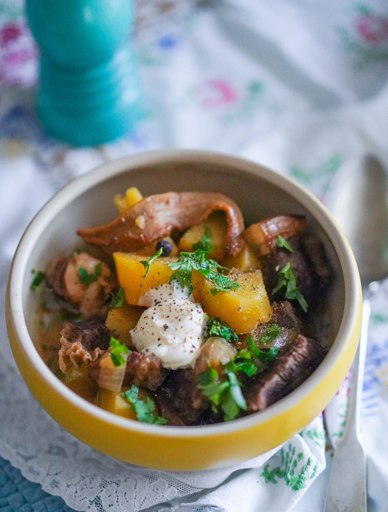

Жаркое — простое, без затей, но согревающее и сытное блюдо русской кухни. Название «жаркое» происходит не от техники жарки, а от слова «жар», так как традиционно блюдо медленно томилось в жаре русской печи. Жаркое часто готовят в порционных керамических горшочках, но, во-первых, не у всех они есть, ведь такая посуда требуется нечасто, а места занимает довольно много, а во-вторых, в отличие от керамики, чугун лучше распределяет и держит тепло, поэтому жаркое в чугунной кастрюле-кассероли будет готовиться и быстрее, и равномернее. Если хотите разнообразить вкус жаркого, попробуйте добавить одновременно с картофелем либо нарезанный небольшими кубиками и обжаренный копчёный бекон, либо нарезанную нетолстыми кружочками морковку или горсть предварительно размоченного чернослива без косточек — в первом случае вы придадите блюду тонкую нотку дымка, во втором — приятную лёгкую сладость. Но имейте в виду, что чернослив способен окрасить картофель, так что вид у жаркого будет не слишком красивый. Что, впрочем, и не требуется от столь простой, но душевной и очень вкусной домашней еды.